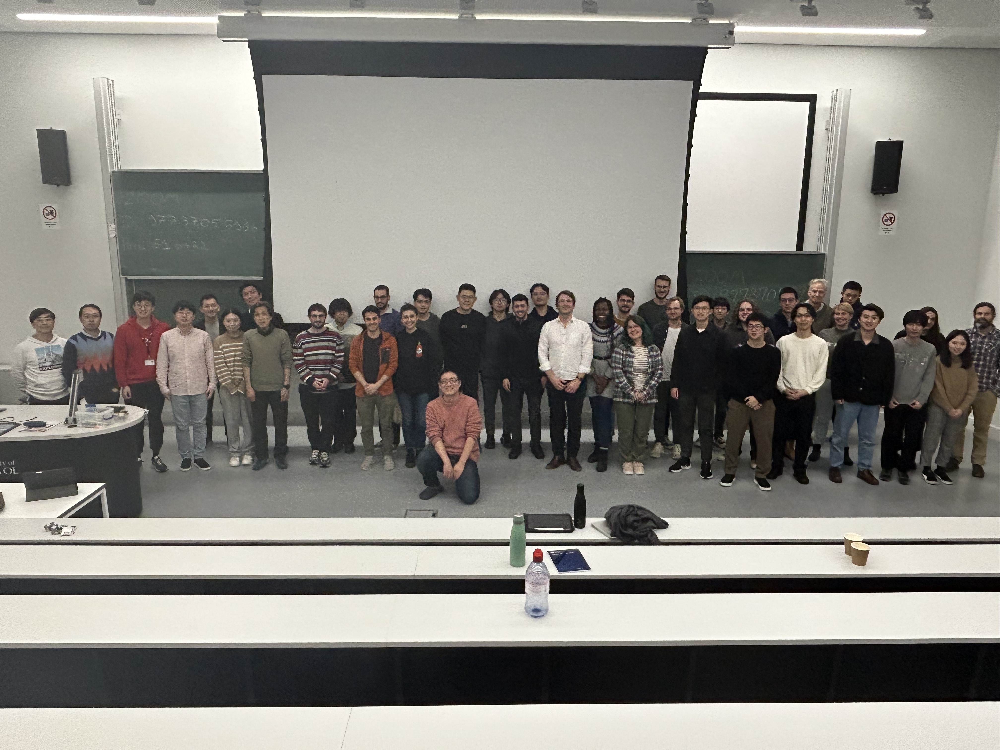

Home

The Workshop on Functional Inference and Machine Intelligence (FIMI) is an international workshop on machine learning and statistics, with a particular focus on theory, methods, and practice. It consists of invited talks, and poster sessions. The topics include (but not limited to):
- Machine Learning Methods
- Deep Learning
- Kernel Methods
- Probabilistic Methods